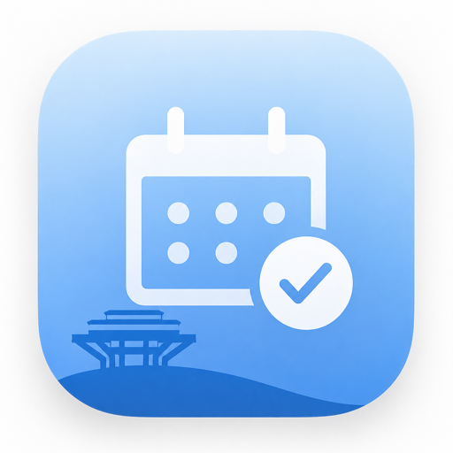
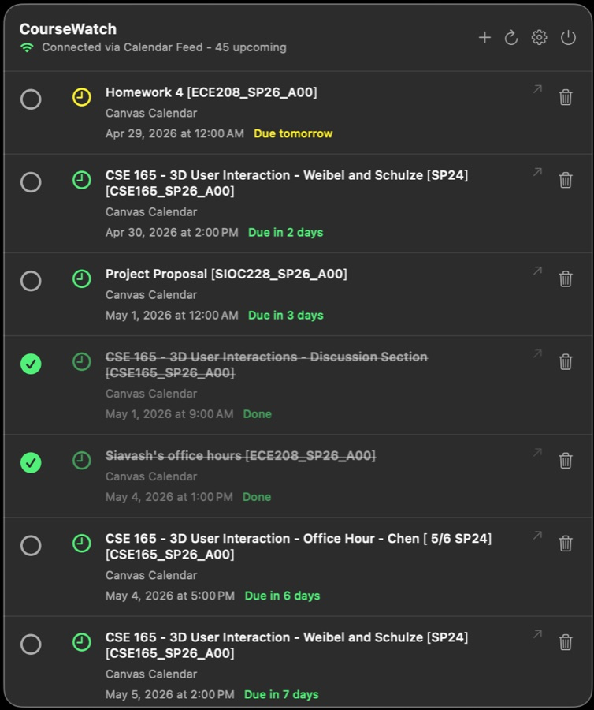
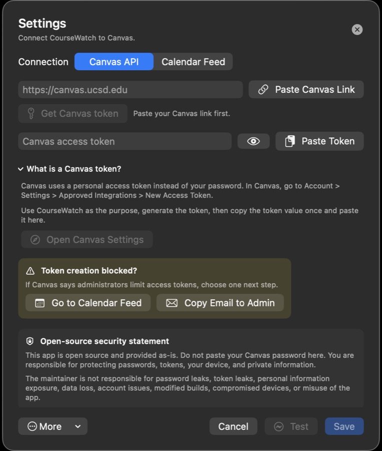
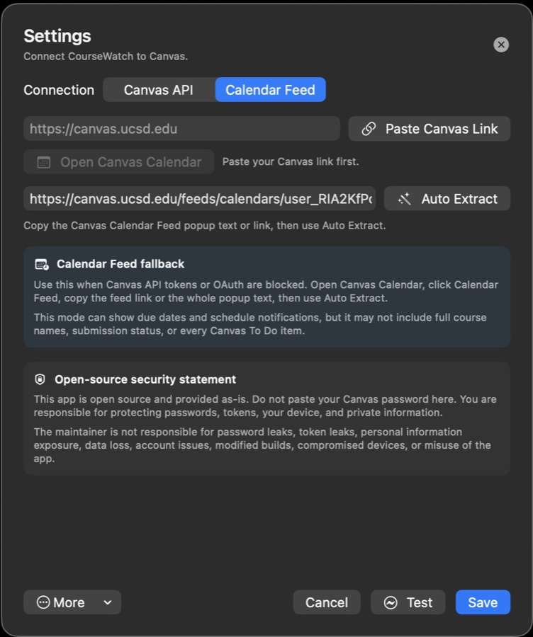
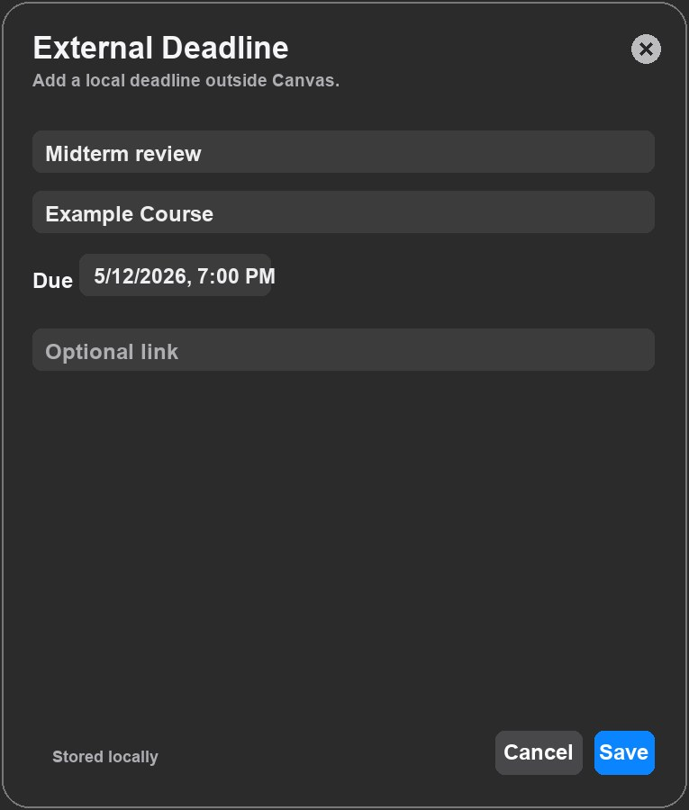

Sync assignments when tokens work.
Fetch active courses and upcoming assignments from Canvas with a personal access token.

CourseWatchOpen source macOS app | v2.1.0
A local-first menu bar app for Canvas deadlines, Calendar Feed reminders, and manual coursework dates.

Features
Fetch active courses and upcoming assignments from Canvas with a personal access token.
Paste the Canvas Calendar Feed popup text and let CourseWatch extract the feed URL.
Track exams, readings, office hours, club work, or anything Canvas does not expose.
CourseWatch schedules macOS notifications 24 hours and 3 hours before deadlines.
Screenshots



Setup
Start with your school Canvas URL, such as https://canvas.example.edu.
Use a Canvas token, or switch to Calendar Feed if token creation is blocked.
Use the plus button for anything outside Canvas or missing from the feed.
Privacy
Canvas tokens are stored in macOS Keychain.
Calendar Feed links and external deadlines are stored locally on your Mac.
CourseWatch is open source and provided as-is.
Download
Download the macOS app DMG directly from GitHub Releases. This build is ad-hoc signed; if macOS warns, use right-click Open.